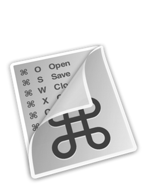

A007 CheatSheet

开发者习惯Mac环境之后，会发现一个事实：鼠标貌似可以是可有可无的东西。触控板所提供的灵活的手势操作，以及各种方便的键盘快捷键，可以解放握鼠标的手，除了精准的区域点击，或者复杂的跨域拖拽，似乎也没有什么非得鼠标才能完成的特殊场景。
不过，在正式与鼠标说再见之前，我们通常会遇到这样一个问题：快捷键真的太难记了。我们可以分析一下具体的情形：通常一个快捷键是由两到三个键组成的（一到两个控制键和一个字母键）。字母键通常跟快捷命令的英文单词相关，比如A代表all，F代表find等等，因此不会带来过多的记忆复杂度。真正的复杂度来自于两点：一个是控制键，command option control shift或者是它们之间的组合；另一个是不同APP之间的快捷键不统一造成的混淆。
那么有没有什么优雅的解决方案呢？那就是：CheatSheet。这款APP运行在Mac平台，其功能就像它的名字一样简单粗暴，就是一个快捷键的小抄表：在任何程序界面长按command，你将会看到一张分门别类整理好的快捷键表单，这张表中的快捷键适用于当前程序的所有快捷指令。你可以稍微偷瞄一下，然后若无其事的释放command，自行输入快捷键触发功能；同样也可以直接点击表中的项目来触发功能，这完全取决于你的需要和习惯。
一切就是这么简单：新世界的大门从此打开了！ 😃